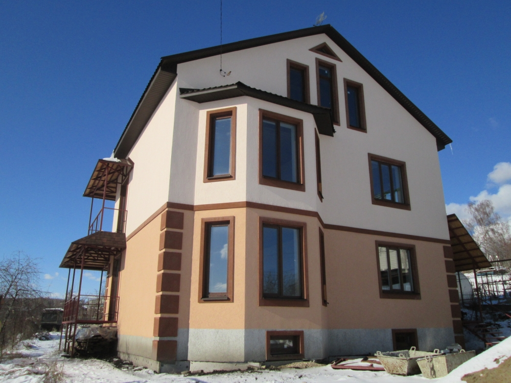

г. Пенза, ул.Кирова 2А
Мы на карте8 (909) 316-83-07
Заказать звонокПродажа домов
Компания «Динамикастрой» предлагает купить дом в Пензе и Пензенской области. На сайте представлены дома, построенные с учетом климата, характеристик почвы, рельефа и уклона участка, имеющие весь пакет сопроводительной и разрешительной документации.
Почему стоит купить дом в Пензе?
Готовые дома пользуются популярностью среди покупателей. Они могут быть одно- и двухэтажными, с цокольным этажом, мансардой и гаражом, возведенные по различным современным технологиям. В нашем каталоге размещены фото зданий в продаже.
Решение купить дом в Пензе и области в состоянии «под ключ» имеет ряд несомненных преимуществ:
Цены на готовые дома и дачи
Цена объекта складывается не только из себестоимости строительства и участка земли. Значение имеет статус участка, район и наличие инфраструктуры, ситуация на рынке недвижимости на момент покупки.
«Динамикастрой» предлагает купить дом в Пензе по цене немного меньше рыночной. В интересах компании – свести к минимуму экспозицию и обеспечить оборот. При прочих равных условиях наши дома отличаются превосходной архитектурой, продуманной планировкой, качеством строительства и материалов.
Дом или квартира?
Продажа домов и дач в Пензе и Пензенской области – востребованная услуга компании среди пензенцев. Это объясняется тем, что все больше горожан предпочитают жить на природе, а в город отправляться только по делам. Стоит отметить и тот факт, что приобретать стараются дом под ключ с благоустроенным участком, не вкладывая дополнительных средств в недострой и ландшафтный дизайн.
Ориентируясь на спрос, мы предоставляем коттеджи, располагающиеся в районах с великолепными природными условиями и развитой инфраструктурой вблизи города. Комфортное безопасное жилье со всеми удобствами ни в чем не уступает городским квартирам, скорее, превосходит по качеству и уюту.
Компания «Динамикастрой» наряду с продажей готовых частных домов и дач в Пензе занимается проектированием и строительством коттеджей под ключ в Пензе и Пензенской области. Если Вы собираетесь переехать в свой дом, но еще не решили, покупать или строить, обратитесь к нашему специалисту по указанному номеру телефона на сайте. Он поможет принять оптимальное решение.